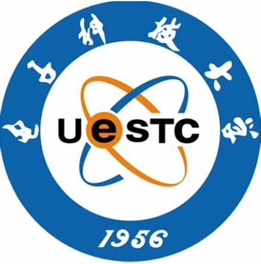

2025 International Conference on Artificial Intelligence and Education (ICAIE), Suzhou, China
🔗 Link 2025 Conference Paper Ei Compendex26th Warwick International Conference in Applied Linguistics
Coventry, United Kingdom 英国, 考文垂
University of Warwick 华威大学
2025 International Conference on Artificial Intelligence and Education
中国，苏州 Suzhou, China
西交利物浦大学 Xi'an Jiaotong-Liverpool University
第二届语言科学与多语智能应用论坛暨第四届语言学跨学科研究学术研讨会
中国，上海 Shanghai, China
上海外国语大学 Shanghai International Studies University
CPCECPR Conference 2025
中国香港 Hong Kong SAR, China
香港理工大学 The Hong Kong Polytechnic University
AI 赋能翻译与国际传播研讨会
中国，北京 Beijing, China
北京外国语大学 Beijing Foreign Studies University
第八届中国二语习得研究高端论坛暨中国英汉语比较研究会二语习得专委会成立二十周年研讨会
The 8th High-level Forum for Second Language Acquisition Studies in China & The 20th Anniversary Seminar of China Association for Second Language Acquisition
中国，成都 Chengdu, China
电子科技大学 University of Electronic Science and Technology of China

2024（第20届）语言智能教学国际会议暨2024英语教育及应用语言学国际大会
2024 (20th) ChinaCALL Conference & International Congress on English Language Education and Applied Linguistics
中国，北京 Beijing, China
北京外国语大学 Beijing Foreign Studies University